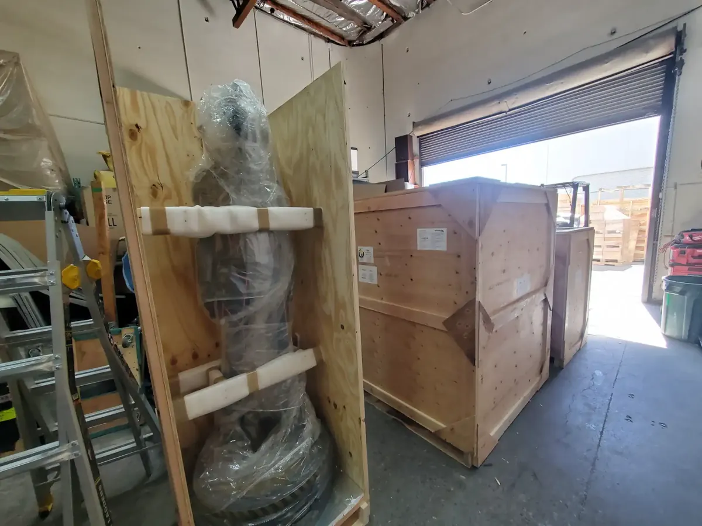

Searching for warehouse storage near me turns up plenty of options in Las Vegas. Telling them apart is the hard part. Some listings are real facilities with staff on site. Others are brokers, sublets, or buildings that look very different in person than they do in a photo. This guide gives you a practical way to sort through them, based on how we have operated a full service warehouse in Las Vegas for more than 20 years, storing inventory, event freight, and fine art for clients including Wynn Las Vegas, Red Bull, and Formula 1.
Start by Confirming the Provider Is a Real Local Operator
Before comparing prices, confirm you are dealing with an actual facility rather than a middleman. Three quick checks will tell you almost everything.
Can You Visit the Building?
Any legitimate provider will let you walk through before you sign. If a company avoids scheduling a visit or only offers to meet elsewhere, treat that as a warning sign. Photos age, and a walkthrough shows you the racking, the loading dock, and how organized the operation really is.

Do They Have a Verifiable Track Record?
Years in business and named clients are harder to fake than a website. We have built our reputation in Las Vegas since the 1990s, and you can read our history to see how the operation grew. For a broader industry view, the International Warehouse Logistics Association lists vetted third party warehouse providers and the standards its members are expected to document.
Is Staff On Site During Business Hours?
A staffed facility means someone can receive your shipment, flag a damaged pallet, and answer the phone when something changes. An unstaffed building means you handle all of that yourself, which is fine for personal items and a problem for business inventory.
Compare Facilities on These Four Things
Once you have a shortlist of real operators, compare them on the factors that actually affect your cost and risk.
Security
Ask what surveillance runs, who has access, and how entries are logged. This matters most for high value goods. Our secure art storage service exists because collectors and galleries need documented, controlled access, not just a locked door.
Location and Access
Distance costs money every time you move goods. A facility close to the Strip and Harry Reid International Airport shortens transport time for event materials and inbound freight. Ask about access hours too, since some providers restrict pickups to a narrow window.
Terms and Flexibility
Find warehouse storage that matches your timeline instead of a fixed lease. Short term needs and long term needs price differently, and a good provider will explain both. Our warehouse services page outlines the range of terms and what each includes.
Services Beyond Storage
Some businesses need goods stored. Others need them moved quickly. If speed matters more than shelf time, ask whether the provider offers cross docking so inbound freight can go straight back out without sitting idle.
Questions Worth Asking Before You Sign
Bring these to every provider on your shortlist. The answers will separate the professional operations from the rest quickly.
- What does your insurance cover, and what do I need to carry myself?
- What is the minimum term, and what happens if my needs change?
- How is my inventory tracked, and can I see stock levels?
- Who has physical access to my goods, and how is that recorded?
If you are evaluating a facility as part of a larger business move, the U.S. Small Business Administration has a useful overview of what to weigh when choosing a business location.
Get a Quote From a Las Vegas Warehouse Storage Provider
You do not need to guess your way through this. Tell us what you are storing and for how long, and we will give you a clear number with no pressure attached. Request a free quote today, or contact our team to schedule a walkthrough of the facility first.